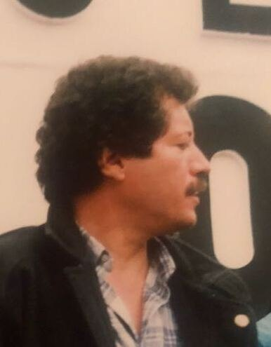

OKpolítico
OKpolíticoEl expediente Colosio: 30 años de dudas y contradicciones

Analizamos a fondo el expediente del asesinato de Luis Donaldo Colosio Murrieta, candidato presidencial del PRI, ocurrido el 23 de marzo de 1994 en Lomas Taurinas, Tijuana. A través de documentos judiciales desclasificados por Mexicanos Contra la Corrupción y la Impunidad (MCCI) y los informes de la
Compartir por WhatsApp▶ Ver este video en YouTube y suscríbete
El magnicidio que fracturó a México
El miércoles 23 de marzo de 1994, a las 17:12 horas, el rumbo político de México sufrió una fractura irreversible en la colonia popular Lomas Taurinas, en Tijuana, Baja California. Luis Donaldo Colosio Murrieta, candidato a la presidencia de la República por el gobernante Partido Revolucionario Institucional,
fue herido de muerte por dos disparos de arma de fuego al finalizar un mitin de campaña. El ataque, perpetrado en medio de una multitud de entre 3 mil 500 y 4 mil personas,
✉️ Recibe lo importante del día en tu correo. Suscríbete gratis →se convirtió en el primer magnicidio registrado en el país desde el asesinato del presidente electo Álvaro Obregón en 1928. La aglomeración y la falta de un cerco de seguridad eficiente facilitaron que un hombre se aproximara a escasos centímetros del candidato para accionar un revólver Taurus calibre .38.
A tres décadas del suceso, el caso permanece como uno de los expedientes más complejos y controvertidos de la justicia mexicana. Aunque la versión oficial de la entonces Procuraduría General de la República concluyó que se trató de la acción de un asesino solitario,
la Fiscalía General de la República reabrió la investigación en el año 2022 para indagar la hipótesis de un segundo tirador.
El enrarecido contexto político de 1994
Luis Donaldo Colosio obtuvo la nominación del PRI el 28 de noviembre de 1993 bajo el método informal conocido como 'destape', donde el presidente en funciones, Carlos Salinas de Gortari, designaba de manera directa a su sucesor.
En un sistema prácticamente unipartidista, el candidato oficial era considerado el presidente inevitable, enfrentando la campaña electoral casi como un trámite de legitimación. Sin embargo, el optimismo del equipo de campaña se colapsó la madrugada del 1 de enero de 1994 con el levantamiento armado del Ejército Zapatista de Liberación Nacional en Chiapas.
Ante el conflicto, el presidente Salinas solicitó a Colosio postergar el inicio de su campaña y nombró a Manuel Camacho Solís, exregente del Distrito Federal y aspirante presidencial derrotado, como comisionado para la paz.
La atención de los medios de comunicación se concentró en Chiapas, debilitando la proyección de la campaña de Colosio. La tensión política creció al punto de que circularon versiones sobre una posible sustitución del candidato priista por Camacho Solís,
lo que obligó al presidente Salinas de Gortari a pronunciar ante la dirigencia de su partido la frase: 'No se hagan bolas, el candidato es Luis Donaldo'.
El 6 de marzo de 1994, durante el aniversario del PRI en el Monumento a la Revolución, Colosio pronunció un discurso que diversos analistas interpretaron como un distanciamiento del régimen salinista. En su mensaje, el candidato declaró ver un México con hambre y con sed de justicia,
y propuso reformar el sistema político limitando el presidencialismo y otorgando mayores facultades al Congreso de la Unión.
Minuto a minuto: El atentado en Lomas Taurinas
El 23 de marzo de 1994, Colosio arribó al aeropuerto de Tijuana a las 16:00 horas, con una hora de retraso. Se trasladó de inmediato a Lomas Taurinas, una colonia marginada asentada en una barranca junto a la frontera con Estados Unidos.
El sitio carecía de condiciones de seguridad y el mitin se organizó de manera informal, utilizando la plataforma de una camioneta pick-up como templete. A las 16:35 horas, el candidato descendió de su vehículo y caminó entre la multitud para cruzar un estrecho puente de madera de 2.80 metros de ancho.
Tras un discurso de 35 minutos, Colosio bajó del templete a las 17:09 horas e intentó regresar a su camioneta. El equipo de seguridad, rebasado por el tumulto y con la canción 'La culebra' sonando a alto volumen, no pudo mantener el diamante de protección.
A las 17:12 horas, tras avanzar apenas 13 metros y medio entre empujones, un joven esquivó el cerco de seguridad, colocó un revólver Taurus calibre .38 cerca de la cabeza del candidato y disparó.
Un segundo impacto alcanzó a Colosio en el abdomen mientras se desplomaba. En el sitio, el personal de seguridad detuvo a Mario Aburto Martínez, un obrero de 25 años, como el presunto agresor.
Colosio fue trasladado de urgencia al Hospital General de Tijuana, ingresando a las 17:20 horas sin reflejos ni respiración, pero con pulso. A pesar de que dos equipos médicos realizaron simultáneamente una craneotomía y una laparotomía, el candidato sufrió un paro cardiorrespiratorio irreversible.
Su fallecimiento fue declarado oficialmente a las 19:45 horas por traumatismo craneoencefálico severo.
La versión oficial: El asesino solitario
La investigación del magnicidio quedó bajo la jurisdicción de la Procuraduría General de la República mediante la facultad de atracción. El 24 de marzo, el procurador Diego Valadés Ríos confirmó la identidad de Mario Aburto Martínez como el autor material de los dos disparos y descartó inicialmente la participación de organizaciones políticas,
basándose en la confesión del detenido. A petición de la viuda Diana Laura Riojas, el presidente Salinas nombró al jurista Miguel Montes García como Fiscal Especial para el caso.
Tras analizar los videos del mitin, Montes sostuvo inicialmente la hipótesis de una 'acción concertada' y detuvo a integrantes del grupo de seguridad local 'Tucán', sugiriendo que abrieron paso deliberadamente al agresor. Sin embargo, el 14 de julio de 1994, el fiscal Montes García modificó radicalmente su postura.
Declaró que no existían pruebas científicas de una conspiración y retomó la tesis del 'asesino solitario'. Según su peritaje, tras recibir el primer disparo en la cabeza, el cuerpo de Colosio realizó un giro involuntario de 180 grados sobre su propio eje,
lo que permitió que Aburto realizara el segundo disparo en el abdomen. En septiembre del año 2000, tras pasar por las gestiones de Olga Islas de González Mariscal y Pablo Chapa Bezanilla, el último fiscal especial,
Luis Raúl González Pérez, publicó el informe final de cuatro tomos. El documento concluyó que no existían evidencias sólidas para señalar a un autor intelectual distinto o a cómplices, cerrando el caso con Mario Aburto Martínez como único responsable.
Las contradicciones del expediente desclasificado
En el año 2018, una resolución del Consejo de la Judicatura Federal, promovida por solicitudes de acceso a la información de la organización Mexicanos Contra la Corrupción y la Impunidad,
ordenó desclasificar la totalidad del expediente judicial del caso, compuesto por más de 9 mil fojas que revelaron inconsistencias severas en las indagatorias oficiales. El expediente desclasificado documenta que Mario Aburto Martínez se retractó de su confesión inicial dos meses después de su detención.
Aburto denunció ante el juez que fue sometido a tortura física y psicológica por los agentes captores, quienes presuntamente lo presionaron para declarar que pertenecía a un grupo político o armado y que había recibido financiamiento externo.
Asimismo, los documentos revelan que la escena del crimen en Lomas Taurinas fue alterada de inmediato por la aglomeración de personas, impidiendo la preservación de indicios balísticos. Además, los peritos de la PGR lavaron la ojiva de la bala encontrada en el lugar antes de realizar los estudios correspondientes, lo que destruyó posibles rastros biológicos y de pólvora.
Otra contradicción relevante involucra a los testimonios del equipo de seguridad. Fernando de la Sota, líder del Grupo Omega de protección, declaró haber visto el cuerpo del candidato boca arriba y sangrando del abdomen,
mientras que los dictámenes periciales de la necropsia establecieron formalmente que el cuerpo quedó en posición decúbito ventral, es decir, boca abajo.
La hipótesis del segundo tirador y el agente del CISEN
La teoría de que un segundo tirador disparó contra el abdomen de Colosio desde su costado izquierdo ha sido sostenida por diversas defensas y reactivada por la Fiscalía General de la República. Esta hipótesis se apoya en que la trayectoria del disparo abdominal, de izquierda a derecha y de abajo hacia arriba,
resulta incompatible con la posición derecha en la que se encontraba Mario Aburto. En 1995, el fiscal Pablo Chapa Bezanilla detuvo a Othón Cortés Vázquez, chofer de la comitiva del candidato, acusándolo de ser el segundo tirador basándose en tres testimonios presenciales.
Sin embargo, en agosto de 1996, un juez federal absolvió a Cortés Vázquez al determinar que los testigos incurrieron en falsas declaraciones y que la PGR carecía de pruebas físicas consistentes. El expediente desclasificado por MCCI también revela que Jorge Antonio Sánchez Ortega, agente del Centro de Investigación y Seguridad Nacional (CISEN),
fue detenido en Lomas Taurinas con manchas de sangre del candidato en su ropa. Las pruebas químicas de rodizonato de sodio resultaron positivas en sus manos, confirmando que accionó un arma de fuego esa tarde.
A pesar de dar positivo a la prueba de pólvora, el agente del CISEN fue liberado pocas horas después por la delegación de la PGR en Tijuana. En su declaración ministerial,
Sánchez Ortega aseguró que no portaba armas de fuego debido a las reglas de su orden de servicio y que la sangre en su chamarra se debió a que se acercó a auxiliar al candidato herido.
Resoluciones judiciales y preguntas sin respuesta
En el ámbito judicial, el único sentenciado por el magnicidio es Mario Aburto Martínez, quien recibió una condena de 45 años de prisión en el Centro Federal de Readaptación Social de Almoloya de Juárez.
Los presuntos cómplices acusados en las distintas etapas de la investigación, incluidos Tranquilino Sánchez y los Mayoral, fueron absueltos por falta de pruebas. La Comisión Nacional de los Derechos Humanos emitió una recomendación documentando violaciones graves a los derechos humanos de Aburto durante su detención,
señalando tortura y la falta de una defensa legal adecuada en sus primeras declaraciones ministeriales. Esto ha motivado recursos legales que buscan la anulación de su sentencia original.
A 30 años del crimen que transformó la estructura del poder en México, persisten interrogantes fundamentales en la opinión pública: ¿Existió un complot político orquestado desde el interior del partido gobernante? ¿Por qué se liberó al agente del CISEN que dio positivo a la prueba de pólvora?
Las respuestas oficiales siguen bajo el escrutinio de la historia.
Sigue viendo
Con información de
Wikipedia - Asesinato de Luis Donaldo Colosio Murrieta · Mexicanos Contra la Corrupción y la Impunidad · Procuraduría General de la República - Informe de la investigación (2000) · Fiscalía General de la República - Expediente Caso Colosio · UnoTV - Versiones del caso Colosio · Infobae - Contradicciones del caso Colosio